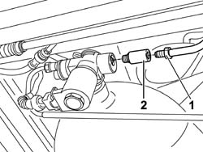

1042A24 CNG INJECTION SYSTEM ONE-WAY VALVE - R R
- Path
- Procedures > 10 ENGINE UNIT > 1042 METHANE GAS CANNISTER AND TUBES > 1042A METHANE GAS CANNISTER AND TUBES FOR RE-CHARGING > 1042A24 CNG INJECTION SYSTEM ONE-WAY VALVE - R R
- Kind
- repair procedure (removal / refitting; the operation number is the code)
- Applies to
- engines: 1.6 16v; production: da 06/04; only with equipment: BIPOWER
- Interactive page
- https://sloeber94.github.io/elrnDB-fMltpl/en/#/186007241
Applies to: engines: 1.6 16v; production: da 06/04; only with equipment: BIPOWER
 Removing
Removing
 Refitting
RefittingPosition the vehicle on a lift.
Proceed with draining the high pressure circuit following the instructions in the specific operation
Op. 1042A02 C.N.G. - FUEL SYSTEM SAFETY CHECK
1. Undo the connector for the repressurizing pipe from the single-acting valve.
2. Unscrew the single-acting valve by means of the notches and remove it complete with sealing ring, spring and internal pistons.

Applies to: engines: 1.6 16v; production: da 06/04; only with equipment: BIPOWER
Refitting
RemovingPosition the piston with spring on the solenoid.
Tighten the single-acting valve with a new sealing ring on the solenoid.
Connect the connector for the repressurizing pipe to the single-acting valve.
Move the CNG cut-off solenoids to open position by hand and check system is efficient.
Connect the Examiner diagnostic equipment in the "Active Diagnosis" ambient, select and carry out "Gas solenoid valve relay" item in order to allow the opening of the solenoid valves and the renewal of the CNG system operating pressure; read the pressure value on the sensor located on the pressure reduction unit in the engine compartment which should be greater than or equal to 14 bar, otherwise it will not be possible to switch from petrol to methane.
Remove the vehicle from the lift.
Op. 1042A06 C.N.G. - FUEL SYSTEM CHECK FOR ANY LEAKS USING ELECTRONIC DETECTOR FOLLOWING OPERATIONS